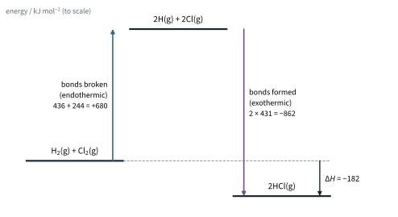
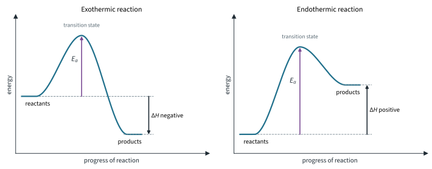
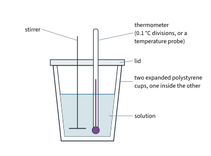
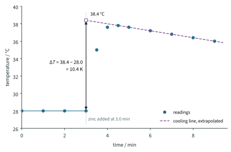
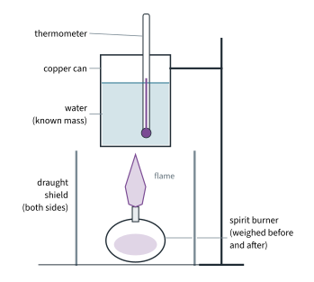

Chemical Energetics 1
Topic 7 · Chemical Energetics Part 1
On this page
Almost every chemical reaction gives out or takes in energy, usually as heat. A camping stove burning gas warms your food; a cold pack in a first-aid kit gets cold when you squeeze it. This Part is about where that energy comes from, how we describe it, and how we measure it. Part 2 shows how to calculate energy changes we cannot measure, and Part 3 asks the bigger question: what decides whether a change happens at all?
Key terms
You will meet these terms throughout the topic. The enthalpy changes in the second half of the table are defined fully, with equations, later in this Part.
| Term | Meaning |
|---|---|
| System | The chemicals we are interested in: the reactants and products. |
| Surroundings | Everything else: the solvent, the container, the thermometer, the air. |
| Enthalpy, H | The heat content of a system at constant pressure. We can never measure H itself, only the change, ΔH. |
| Enthalpy change, ΔH | The heat change at constant pressure: ΔH = H(products) − H(reactants), in kJ mol−1. |
| Exothermic | Heat is given out to the surroundings, which get warmer. ΔH is negative. |
| Endothermic | Heat is taken in from the surroundings, which get cooler. ΔH is positive. |
| Activation energy, Ea | The minimum energy that colliding particles need for a reaction to take place (Topic 8). |
| Standard conditions | 298 K, 1 bar (105 Pa), solutions at 1 mol dm−3, every substance in its standard state. Shown by ⦵, as in ΔH⦵. |
Exothermic and endothermic changes
Think of the system as having a store of energy, its enthalpy. If the products have less enthalpy than the reactants, the difference has gone out to the surroundings as heat: the reaction is exothermic and ΔH is negative. If the products have more enthalpy, the difference was taken in from the surroundings: the reaction is endothermic and ΔH is positive.
- Exothermic: combustion of fuels, neutralisation, respiration, the reaction of magnesium with dilute acid, condensing steam, freezing water.
- Endothermic: thermal decomposition of calcium carbonate, photosynthesis, dissolving ammonium nitrate in water (the cold pack), melting ice, boiling water.
Notice that physical changes have enthalpy changes too. Melting and boiling are endothermic; freezing and condensing are exothermic.
Where the energy comes from: breaking and making bonds
A reaction rearranges atoms: some bonds in the reactants break and new bonds in the products form.
- Breaking a bond always takes in energy (endothermic): work must be done to pull the bonded atoms apart against the attraction holding them together.
- Forming a bond always gives out energy (exothermic): the atoms fall into the lower energy of the bonded state.
Whether the whole reaction is exothermic or endothermic depends on the balance. If the bonds formed release more energy than the bonds broken take in, the reaction is exothermic. Fig 1 shows this for hydrogen and chlorine, using bond energies from the Data Booklet: breaking one H–H and one Cl–Cl bond takes in 680 kJ, forming two H–Cl bonds gives out 862 kJ, so overall 182 kJ is given out for every mole of H2 that reacts.

Energy profile diagrams
An energy profile diagram shows how the energy of the reacting system changes as the reaction proceeds. Reactants must first collide with at least the activation energy, Ea, to reach the high-energy arrangement at the top of the curve (the transition state), where old bonds are partly broken and new ones partly formed. Only then can they fall to the products. Fig 2 shows the two cases.1

To construct one:
- Label the axes: energy (vertical) and progress of reaction (horizontal).
- Draw the reactant level and the product level: products lower for an exothermic reaction, higher for an endothermic one.
- Join them with a smooth hump.
- Show Ea with an arrow from the reactant level up to the top of the hump, and ΔH with an arrow from the reactant level to the product level (pointing down for exothermic, up for endothermic). Label both.
Reading the diagram backwards gives the reverse reaction. Its activation energy is measured from the product level to the top, and its ΔH has the same size but the opposite sign.
Worked example 1
A reaction has Ea = +75 kJ mol−1 and ΔH = −40 kJ mol−1 (illustrative data). (a) Is it exothermic or endothermic? (b) What are Ea and ΔH for the reverse reaction? (c) What does a catalyst change?
(a) ΔH is negative, so the reaction is exothermic: the products are 40 kJ mol−1 below the reactants.
(b) (To answer this, sketch the profile: the top of the hump is 75 kJ mol−1 above the reactants, and the products are 40 kJ mol−1 below them.) Going backwards, the products must climb 75 + 40 = 115 kJ mol−1 to reach the top: Ea(reverse) = +115 kJ mol−1, and ΔH(reverse) = +40 kJ mol−1.
(c) A catalyst provides an alternative reaction pathway with lower activation energy, so Ea falls for both the forward and the reverse reaction. The reactant and product levels do not move, so ΔH is unchanged (Topic 8 Part 2).
Standard enthalpy changes
The size of an enthalpy change depends on the conditions and on the physical states of the substances (ΔH for making liquid water is different from that for making steam). So that values can be compared and tabulated, they are quoted under standard conditions:2
- a temperature of 298 K (25 °C);
- a pressure of 1 bar (105 Pa);
- solutions at a concentration of 1 mol dm−3;
- every substance in its standard state: its normal physical state at 298 K and 1 bar (O2(g), H2O(l), Br2(l), I2(s), and carbon as graphite).
A standard enthalpy change is written ΔH⦵, read "delta H standard". Always write the equation with state symbols: it defines what the value refers to.
The enthalpy changes you need
Each definition is for one mole of something; check which thing it is one mole of. Values are literature values: the Data Booklet has bond energies, ionisation energies, ionic radii and c, but no enthalpies of formation, combustion, atomisation, hydration, solution or neutralisation.
| Enthalpy change | Definition (standard conditions) | Example, ΔH⦵ / kJ mol−1 |
|---|---|---|
| Reaction, ΔHr⦵ | The enthalpy change when the amounts of reactants shown in the equation react completely. | N2(g) + 3H2(g) → 2NH3(g); −92 |
| Formation, ΔHf⦵ | The enthalpy change when 1 mol of a substance is formed from its elements in their standard states. | Na(s) + ½Cl2(g) → NaCl(s); −411 |
| Combustion, ΔHc⦵ | The enthalpy change when 1 mol of a substance is completely burnt in excess oxygen. | CH4(g) + 2O2(g) → CO2(g) + 2H2O(l); −890 |
| Neutralisation, ΔHneut⦵ | The enthalpy change when an acid and a base react to form 1 mol of water. | H+(aq) + OH−(aq) → H2O(l); −57 |
| Atomisation, ΔHat⦵ | The enthalpy change when 1 mol of gaseous atoms is formed from the element in its standard state. | Na(s) → Na(g); +107. ½Cl2(g) → Cl(g); +122 |
| Hydration, ΔHhyd⦵ | The enthalpy change when 1 mol of gaseous ions dissolves in water to give an infinitely dilute solution. | Na+(g) + aq → Na+(aq); −406 |
| Solution, ΔHsol⦵ | The enthalpy change when 1 mol of a substance dissolves completely in water to give an infinitely dilute solution. | NaCl(s) + aq → Na+(aq) + Cl−(aq); +4 |
| Bond energy | The energy needed to break 1 mol of a covalent bond in the gaseous state (always positive; for bonds in polyatomic molecules, an average). | Cl2(g) → 2Cl(g); +244 (Data Booklet) |
| Lattice energy | The energy released when 1 mol of a solid ionic compound is formed from its gaseous ions (always negative). | Na+(g) + Cl−(g) → NaCl(s); −785 (Part 2; literature −787) |
Electron affinity, the last term in the syllabus list, is defined in Part 2 with lattice energy, where both are used.
Points to watch
- ΔHf⦵ of an element in its standard state is zero by definition (O2(g), Na(s), C(graphite)): forming it from itself is no change.
- A formation equation may need fractions, because it must make exactly 1 mol of product: ½Cl2, not Cl2.
- ΔHc⦵(C, graphite) and ΔHf⦵(CO2) are the same equation, C(s) + O2(g) → CO2(g), so they have the same value, −394 kJ mol−1. The same is true of H2(g) and H2O(l): −286 kJ mol−1.
- Atomisation is always endothermic, and so is breaking a bond. For a gaseous diatomic element, ΔHat⦵ is half the bond energy: ΔHat⦵(Cl) = ½ × 244 = +122 kJ mol−1, because one Cl–Cl bond gives two Cl atoms.
- Hydration is always exothermic: the ions attract the polar water molecules (ion-dipole attractions).
- Neutralisation of any strong acid by any strong base gives about −57 kJ mol−1, because the reaction is always H+(aq) + OH−(aq) → H2O(l); the other ions are spectators. With a weak acid it is less exothermic (ethanoic acid about −56, hydrogen cyanide about −12 kJ mol−1), because some energy is used to ionise the weak acid as it reacts.3
- Per mole of water: H2SO4 + 2NaOH → Na2SO4 + 2H2O gives about −114 kJ for the equation as written, but ΔHneut is still −57 kJ mol−1.
Measuring enthalpy changes: calorimetry
We cannot measure the heat a reaction gives out directly. Instead we let it heat (or cool) a known mass of water or solution, measure the temperature change, and calculate the heat from:
heat change, q = mcΔT
- m = the mass of the water or solution that changes temperature, in g (for dilute solutions, take 1 cm3 as 1 g);
- c = the specific heat capacity, the heat needed to raise 1 g by 1 K: for water, c = 4.18 J g−1 K−1 (Data Booklet);
- ΔT = the change in temperature, in K (a change of 1 K is the same size as a change of 1 °C).
Then divide by the number of moles that reacted, and give the sign from what the thermometer did:
For reactions in solution, a simple calorimeter is an expanded polystyrene cup (Fig 3): polystyrene is a poor conductor and has a very small heat capacity, so almost all the heat goes into the solution.

The calculation makes some assumptions; when your answer differs from the literature value, these are the places to look:
- the density of the solution is 1.00 g cm−3, and its specific heat capacity is that of water;
- the cup, thermometer and stirrer absorb no heat, and no heat is lost to (or gained from) the air;
- the reaction is complete, and the mass of any solid added is small enough to ignore.
Worked example 2: enthalpy change of neutralisation
50.0 cm3 of 1.00 mol dm−3 hydrochloric acid was mixed with 50.0 cm3 of 1.00 mol dm−3 sodium hydroxide in a polystyrene cup. Both started at the same temperature, and the temperature rose by 6.8 K. Calculate the enthalpy change of neutralisation (illustrative data).
(To find ΔH you need q, from the temperature rise, and n, the moles of water formed.) The mass heated is the total volume of solution, 100 cm3, so m = 100 g:
q = mcΔT = 100 × 4.18 × 6.8 = 2842 J = 2.842 kJ
HCl(aq) + NaOH(aq) → NaCl(aq) + H2O(l)
n(H2O) = n(HCl) = (50.0 × 1.00) / 1000 = 0.0500 mol
The temperature rose, so ΔH is negative:
ΔHneut = −2.842 / 0.0500 = −56.8 kJ mol−1
(Answer to 2 s.f., the precision of ΔT: −57 kJ mol−1, in line with the literature value.)
Worked example 3: enthalpy change of solution
8.00 g of ammonium nitrate, NH4NO3 (Mr 80.0), was dissolved in 50.0 cm3 of water. The temperature fell by 12.3 K. Calculate the enthalpy change of solution (illustrative data).
(This time the temperature falls: the dissolving takes heat from the water.) Take the mass heated as the 50.0 g of water, ignoring the small mass of solid:
q = 50.0 × 4.18 × 12.3 = 2571 J = 2.571 kJ (taken in)
n(NH4NO3) = 8.00 / 80.0 = 0.100 mol
ΔHsol = +2.571 / 0.100 = +25.7 kJ mol−1
This is the reaction in an instant cold pack: NH4NO3(s) + aq → NH4+(aq) + NO3−(aq). Why an endothermic change like this happens at all, without being pushed, is the question of Part 3.
Worked example 4: correcting for heat loss with a cooling curve
Many reactions do not finish instantly, and the solution starts to lose heat to the air while the reaction is still going. The highest temperature you read is then lower than it should be. The fix is to take readings for several minutes before and after mixing, plot temperature against time, and extrapolate the cooling line back to the moment of mixing. That gives the temperature the solution would have reached if the reaction had been instant, with no heat lost.
Excess zinc powder was added at 3.0 min to 50.0 cm3 of 0.200 mol dm−3 copper(II) sulfate solution in a polystyrene cup, with stirring. The readings are below (illustrative data). Calculate ΔH for the reaction.
Zn(s) + Cu2+(aq) → Zn2+(aq) + Cu(s)
| Time / min | 0.0 | 1.0 | 2.0 | 3.0 | 3.5 | 4.0 | 4.5 | 5.0 | 6.0 | 7.0 | 8.0 | 9.0 |
|---|---|---|---|---|---|---|---|---|---|---|---|---|
| Temperature / °C | 28.0 | 28.0 | 28.0 | 28.0 | 35.0 | 37.6 | 37.8 | 37.6 | 37.2 | 36.8 | 36.4 | 36.0 |

(The highest reading is 37.8 °C, but the solution was already cooling by then.) Extrapolating the cooling line to 3.0 min gives 38.4 °C, so ΔT = 38.4 − 28.0 = 10.4 K:
q = 50.0 × 4.18 × 10.4 = 2174 J = 2.174 kJ
Zinc is in excess, so copper(II) ions are the limiting reagent (Topic 6 Part 2) and fix the amount that reacts:
n(Cu2+) = (50.0 × 0.200) / 1000 = 0.0100 mol
ΔH = −2.174 / 0.0100 = −217 kJ mol−1
(Using the highest reading instead would give ΔT = 9.8 K and ΔH = −205 kJ mol−1: too small, because of the heat already lost.)
Worked example 5: enthalpy change of combustion
For a liquid fuel, burn it in a spirit burner under a copper can of water (Fig 5), and weigh the burner before and after to find the mass burnt.

Burning 0.920 g of ethanol, C2H5OH (Mr 46.0), raised the temperature of 200 g of water by 20.0 K. Calculate ΔHc of ethanol and compare it with the literature value, −1367 kJ mol−1 (illustrative data).
q = 200 × 4.18 × 20.0 = 16 720 J = 16.72 kJ
n(C2H5OH) = 0.920 / 46.0 = 0.0200 mol
ΔHc = −16.72 / 0.0200 = −836 kJ mol−1
This is only 836 / 1367 × 100 = 61 % of the literature value. The experiment is simple but not accurate:
- heat is lost to the air around the flame and the can, and to heating the can itself;
- combustion is incomplete: a sooty, yellow flame means some carbon or carbon monoxide forms instead of CO2;
- some ethanol evaporates from the wick without burning, so the mass loss overstates the amount burnt;
- the literature value is for water formed as a liquid at 298 K; here much of it leaves as steam.
A draught shield, a lid on the can, a short distance from flame to can and stirring all help. Accurate values come from a bomb calorimeter, in which the fuel burns in pure oxygen inside a sealed steel vessel sunk in water.
Summary
| Idea | Key point |
|---|---|
| Sign of ΔH | Exothermic: ΔH < 0, surroundings warm. Endothermic: ΔH > 0, surroundings cool. |
| Bonds | Breaking bonds takes in energy; forming bonds gives out energy. ΔH is the balance. |
| Energy profile | Reactant and product levels, a hump of height Ea above the reactants; ΔH from reactants to products. A catalyst lowers Ea, not ΔH. |
| Standard conditions | 298 K, 1 bar, 1 mol dm−3, standard states; ΔH⦵. |
| Definitions | Each is per mole of something: substance formed, substance burnt, water formed, gaseous atoms formed, gaseous ions hydrated, solute dissolved, bonds broken, solid lattice formed. |
| Calorimetry | q = mcΔT, then ΔH = −q / n; temperature rise means ΔH negative. Extrapolate a cooling curve to correct for heat loss. |
Additional information
- Topic 8 uses the same diagram to explain how temperature and catalysts change the rate. In Part 2 we will see how the bond energies behind Fig 1 let you calculate ΔH. ↩
- These are not the same as s.t.p. in Topic 3 (273 K, 105 Pa), which is used for gas volumes. Some older books use 1 atm (101 325 Pa) as the standard pressure; the difference in ΔH values is negligible. ↩
- These are approximate literature values. Topic 10 deals with weak acids and their ionisation. ↩